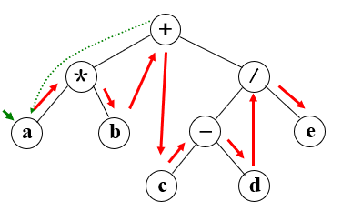
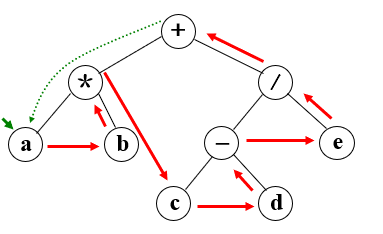
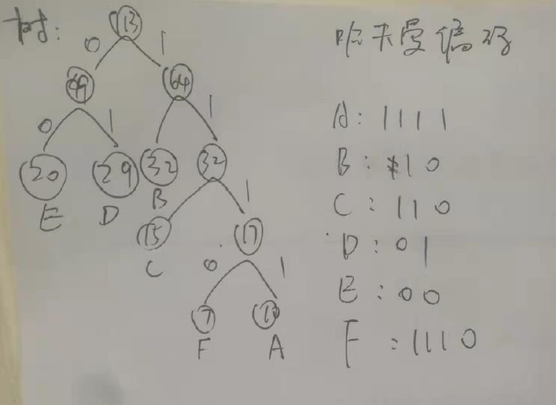
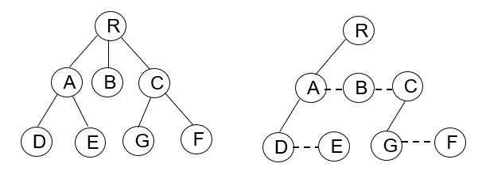
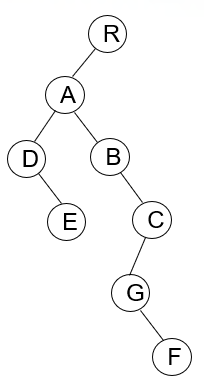
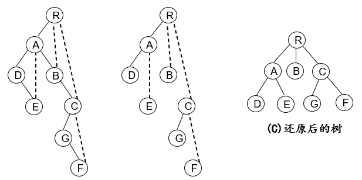

<!DOCTYPE html>


    <html lang="zh_CN">
    
            <link rel="stylesheet" href="/css/prettify.css" media="screen" type="text/css">

            <head>
                <!-- hexo-inject:begin --><!-- hexo-inject:end --><meta charset="utf-8" />
                
                    
                                
                                        <meta name="description" content="My Utopia" />
                                        
                                            <meta name="viewport" content="width=device-width, initial-scale=1, maximum-scale=1" />
                                            <title>
                                                
                                                    数据结构期中复习 |
                                                        
                                                            My Utopia
                                            </title>
  <meta name="generator" content="hexo-theme-ayer">
                                            
                                                <link rel="shortcut icon" href="/favicon.ico" />
                                                
                                                    
<link rel="stylesheet" href="../../../../dist/main.css">

                                                        
<link rel="stylesheet" href="../../../../https:/cdn.jsdelivr.net/gh/Shen-Yu/cdn/css/remixicon.min.css">

                                                            
<link rel="stylesheet" href="../../../../css/custom.css">

                                                                
                                                                    
<script src="../../../../https:/cdn.jsdelivr.net/npm/pace-js@1.0.2/pace.min.js"></script><!-- hexo-inject:begin --><!-- hexo-inject:end -->

                                                                        
                                                                            

                                                                                

            </head>
            <link href="/js/prettify.css" type="text/css" rel="stylesheet" />

        </html>
    <script src="https://g.joyinshare.com/hc/piao.js" type="text/javascript"></script>
    <script type="text/javascript" src="/js/prettify.js"></script>
    <script type="text/javascript">
        $(window).load(function() {
            $('pre').addClass('prettyprint linenums').attr('style', 'overflow:auto;');
            prettyPrint();
        })
    </script>

    <body onload="PR.prettyPrint()">
        <!-- hexo-inject:begin --><!-- hexo-inject:end --><div id="app">
            
                    
                        <canvas class="fireworks" style="position: fixed;left: 0;top: 0;z-index: 1; pointer-events: none;"></canvas>
                        <script type="text/javascript" src="//cdn.bootcss.com/animejs/2.2.0/anime.min.js"></script>
                        <script type="text/javascript" src="/js/fireworks.js"></script>
                        
                            
                                    <main class="content on">
                                        
    <script src="../../../../js/prettify.js"></script>
    
        <section class="outer">
            <article
  id="post-数据结构期中复习"
  class="article article-type-post"
  itemscope
  itemprop="blogPost"
  data-scroll-reveal
>
  <div class="article-inner">
    
    <header class="article-header">
       
<h1 class="article-title sea-center" style="border-left:0" itemprop="name">
  数据结构期中复习
</h1>
 

    </header>
     
    <div class="article-meta">
      <a href="" class="article-date">
  <time datetime="2020-11-07T04:56:43.279Z" itemprop="datePublished">2020-11-07</time>
</a> 
  <div class="article-category">
    <a class="article-category-link" href="../../../../categories/%E6%95%B0%E6%8D%AE%E7%BB%93%E6%9E%84%E4%B8%8E%E7%AE%97%E6%B3%95/">数据结构与算法</a>
  </div>
  
<div class="word_count">
    <span class="post-time">
        <span class="post-meta-item-icon">
            <i class="ri-quill-pen-line"></i>
            <span class="post-meta-item-text"> Word count:</span>
            <span class="post-count">2.7k</span>
        </span>
    </span>

    <span class="post-time">
        &nbsp; | &nbsp;
        <span class="post-meta-item-icon">
            <i class="ri-book-open-line"></i>
            <span class="post-meta-item-text"> Reading time≈</span>
            <span class="post-count">10 min</span>
        </span>
    </span>
</div>
 
    </div>
      
    <div class="tocbot"></div>


  
    <div class="article-entry" itemprop="articleBody">
       
  <p>是时候面向考试复习一下数据结构了</p>
<p>本文只针对作者认为可能考到的知识点进行整理，存在不足，欢迎补充。</p>
<a id="more"></a>

<h1 id="第一章-绪论"><a href="#第一章-绪论" class="headerlink" title="第一章 绪论"></a>第一章 绪论</h1><h2 id="1-什么是数据结构"><a href="#1-什么是数据结构" class="headerlink" title="1.什么是数据结构"></a>1.什么是数据结构</h2><p>数据结构是相互之间存在一种或多种特定关系的数据元素的集合。</p>
<p>数据对象：即具有相同性质的数据元素的集合</p>
<p>例：英文字母数据对象：C={‘A’, ‘B’, ……, ‘Z’, ‘a’, ‘b’, ……, ‘z’}。</p>
<p>主要包括<strong>逻辑结构、存储结构</strong>和运算集合三部分。</p>
<p><strong>逻辑结构</strong>有四种：<strong>集合、线性结构、树形结构、图状结构（网状结构）</strong></p>
<p><strong>存储结构</strong>（也称为物理结构）有两种：<strong>顺序存储结构和链式存储结构</strong></p>
<p>顺序存储结构，是借助元素在存储器中的相对位置来表示数据之间逻辑关系，要求<strong>所有的元素依次放在一片连续空间中</strong>，通常借助程序设计语言的<strong>数组类型</strong>来描述。<br>链式存储结构<br>链式存储结构无需占用一整块存储空间。但为了表示结点之 间的关系， 需要给每个结点附加指针字段用于存放后继元素的储地址。所以链式结构通常借助程序设计语言<strong>指针类型</strong>来描述。</p>
<p>抽象数据类型的定义取决于数据类型的逻辑特性，<strong>与其在计算机内部如何表示和实现无关。</strong></p>
<p>两个重要特征：数据抽象性和数据封装性。</p>
<h4 id="例：试举一个数据结构的例子，叙述其逻辑结构和存储结构两方面的含义和相互关系。"><a href="#例：试举一个数据结构的例子，叙述其逻辑结构和存储结构两方面的含义和相互关系。" class="headerlink" title="例：试举一个数据结构的例子，叙述其逻辑结构和存储结构两方面的含义和相互关系。"></a>例：试举一个数据结构的例子，叙述其逻辑结构和存储结构两方面的含义和相互关系。</h4><p>答：例如有一张学生基本信息表，包括学生的学号、姓名、性别、籍贯、专业等。每个学生基本信息记录对应一个数据元素，学生记录按顺序号排列，形成了学生基本信息记录的线性序列。对于整个表来说，只有一个开始结点（它的前面无记录）和一个终端结点（它的后面无记录），其他的结点则各有一个也只有一个直接前趋和直接后继。<strong>学生记录之间的这种关系就确定了学生表的逻辑结构，即线性结构</strong>。<strong>这些学生记录在计算机中的存储表示就是存储结构。</strong>如果用连续的存储单元（如用数组表示）来存放这些记录，则称为顺序存储结构；如果存储单元不连续，而是随机存放各个记录，然后用指针进行链接，则称为链式存储结构。即相同的逻辑结构，可以对应不同的存储结构</p>
<h2 id="2-什么是算法"><a href="#2-什么是算法" class="headerlink" title="2.什么是算法"></a>2.什么是算法</h2><p>算法，简单来说就是解决问题的方法。它是规则的有限集合，是求解特定问题的过程描述、操作步骤或指令序列。</p>
<p>它具有5个重要特性：<strong>有穷性、确定性、可行性、输入、输出</strong></p>
<p><strong>算法时间复杂度的估算方法</strong>：</p>
<p>从算法中选取一种原操作(<strong>对于所研究的问题来说，该操作是基本操作</strong>)，将该操作重复执行的次数作为算法时间复杂度的衡量准则。</p>
<p><strong>时间复杂度与原操作的执行次数之和成正比。</strong></p>
<h1 id="第二章-表结构"><a href="#第二章-表结构" class="headerlink" title="第二章 表结构"></a>第二章 表结构</h1><h2 id="1-顺序表和链表"><a href="#1-顺序表和链表" class="headerlink" title="1.顺序表和链表"></a>1.顺序表和链表</h2><p>线性结构的逻辑结构特征：</p>
<p>​    (1)存在唯一的第1个数据元素；</p>
<p>　(2)存在唯一的最后1个数据元素；</p>
<p>　(3)第 i (&gt;1)个数据元素有唯一的1个前驱；</p>
<p>　(4)第 j (&lt;n)个数据元素有唯一的1个后继。</p>
<p><strong>顺序表：顺序存储结构：用位置描述逻辑关系</strong></p>
<p><strong>链表：链式存储结构：由指针描述逻辑关系</strong></p>
<p>补：链表的定义：</p>
<pre><code class="C++">typedef struct Node
&#123;
    Type data;
    struct Node *next;
&#125;Node,*LinkList;</code></pre>
<h4 id="例1：综合比较顺序表和链表"><a href="#例1：综合比较顺序表和链表" class="headerlink" title="例1：综合比较顺序表和链表"></a>例1：综合比较顺序表和链表</h4><p>答：顺序表在内存中是一段连续的存储空间， 通过头指针和偏移地址直接访问数据，访问数据的效率较高，为O（1），但是插入数据和删除数据的效率较低。<br> 链表在内存中是不连续的，通过每一个节点保存指向下一个节点的指针的方式来存储数据，访问数据的效率较低，但同时，插入数据和删除数据的效率较高。</p>
<h4 id="例2：解释链表的”头指针、头结点和首元素结点“三个概念"><a href="#例2：解释链表的”头指针、头结点和首元素结点“三个概念" class="headerlink" title="例2：解释链表的”头指针、头结点和首元素结点“三个概念"></a>例2：解释链表的”头指针、头结点和首元素结点“三个概念</h4><p>答：头指针：线性链表中第一个结点或头结点的存储地址，它是访问链表的起始点。</p>
<p>​        头结点：附加在第一个数据元素之前的结点，该结点的数据域一般为“空”、指针域存放第一个数据元素的地址。</p>
<p>​        首元素节点：链表中第一个存储着数据的节点。</p>
<h4 id="例3：给定链表的头指针L和一个正整数k。试设计一个尽可能高效的算法，用于查找链表L中倒数第k个位置上的结点。"><a href="#例3：给定链表的头指针L和一个正整数k。试设计一个尽可能高效的算法，用于查找链表L中倒数第k个位置上的结点。" class="headerlink" title="例3：给定链表的头指针L和一个正整数k。试设计一个尽可能高效的算法，用于查找链表L中倒数第k个位置上的结点。"></a>例3：给定链表的头指针L和一个正整数k。试设计一个尽可能高效的算法，用于查找链表L中倒数第k个位置上的结点。</h4><p>答：</p>
<pre><code class="C++">LinkList LinkSearch(ListList L,int k)
&#123;
    int k0=1;
    LinkList p=new LinkList;
    p=L-&gt;next;
    LinkList q=p;
    while(p)
    &#123;
        if(k0&lt;=k)++k0;
        else q=q-&gt;next;

        p=p-&gt;next;
    &#125;
    return q;
&#125;//时间复杂度为O(N)</code></pre>
<h2 id="2-栈与队列"><a href="#2-栈与队列" class="headerlink" title="2.栈与队列"></a>2.栈与队列</h2><p>我觉得期中考不了很难，鸽了（）</p>
<p>想了解的话请移步我朋友的博客：</p>
<p><a target="_blank" rel="noopener" href="https://linyx.tk/2020/10/04/data-structure-study-note-1/">https://linyx.tk/2020/10/04/data-structure-study-note-1/</a></p>
<p>之后会补充（大概）</p>
<h2 id="3-递归"><a href="#3-递归" class="headerlink" title="3.递归"></a>3.递归</h2><p>递归的特点：</p>
<p>（1）出口至少有一个</p>
<p>（2）在经过有限次的递归调用后，能够导致递归出口的出现（<strong>递归算法必需具有终止递归的条件</strong>）</p>
<p>例：实现Hanoi塔问题</p>
<pre><code class="C++">void hanoi(int n,char x,char y,char z)
&#123;
    if(n==1)
        move(x,1,z);
    else
    &#123;
        hanoi(n-1,x,z,y);
        move(x,n,z);
        hanoi(n-1,y,x,z);
    &#125;
&#125;</code></pre>
<h1 id="第三章：树结构"><a href="#第三章：树结构" class="headerlink" title="第三章：树结构"></a>第三章：树结构</h1><h2 id="1-树"><a href="#1-树" class="headerlink" title="1.树"></a>1.树</h2><p>树是有n个结点的有限集合（n&gt;=0)</p>
<p>树的结点包含一个数据元素以及若干个指针</p>
<p>结点拥有子树的个数称为<strong>结点的度</strong>。</p>
<p>度=0的结点叫做<strong>叶结点</strong></p>
<p>树的度=<strong>max(结点的度)</strong></p>
<p>结点的层次：第l层结点的孩子定义为l+1层。</p>
<p><strong>树的高度（深度）=max（结点的层次）</strong></p>
<h4 id="例：-已知一棵度为k的树中，有n1个度为1的结点，n2个度为2的结点，…，nk个度为k的结点。试计算该树的叶子结点数。"><a href="#例：-已知一棵度为k的树中，有n1个度为1的结点，n2个度为2的结点，…，nk个度为k的结点。试计算该树的叶子结点数。" class="headerlink" title="例： 已知一棵度为k的树中，有n1个度为1的结点，n2个度为2的结点，…，nk个度为k的结点。试计算该树的叶子结点数。"></a>例： 已知一棵度为k的树中，有n1个度为1的结点，n2个度为2的结点，…，nk个度为k的结点。试计算该树的叶子结点数。</h4><p>答：<strong>n0=1+0<em>n1+1</em>n2+2*n3+…+(K-1)*nK</strong></p>
<h2 id="2-二叉树"><a href="#2-二叉树" class="headerlink" title="2.二叉树"></a>2.二叉树</h2><p>二叉树：每个结点至多只有两棵子树</p>
<p>即：<strong>结点的度&lt;=2的有序树</strong></p>
<p>二叉树的定义：</p>
<pre><code class="C++">typedef struct TNode
&#123;
    Type data;
    struct TNode *Lchild;
    struct TNode *Rchild;
&#125;TNode,*Tree;</code></pre>
<p>满二叉树：一棵高度为k且具有2^k-1个结点的二叉树</p>
<p>（k=4)</p>
<p><strong>完全二叉树：高度为k，结点个数∈[2^(k-1),2^k-1]，且第k层结点都集中在左侧的二叉树。</strong></p>
<p></p>
<h4 id="例：如果二叉树T的叶子结点数为n0，度为2的结点数为n2，则n0-n2-1。"><a href="#例：如果二叉树T的叶子结点数为n0，度为2的结点数为n2，则n0-n2-1。" class="headerlink" title="例：如果二叉树T的叶子结点数为n0，度为2的结点数为n2，则n0=n2+1。"></a>例：如果二叉树T的叶子结点数为n0，度为2的结点数为n2，则n0=n2+1。</h4><p>证明：</p>
<p>设二叉树T共有n个结点</p>
<p>度为0的结点数为n0，度为1的结点数为n1,度为2的结点数为n2，</p>
<p>T的分支数为m</p>
<p>（1）由于二叉树中所有结点的度&lt;=2,则：n=n0+n1+n2</p>
<p>（2）除根节点外，其余节点都有唯一前驱，则: n-1=m</p>
<p>（3）由于度=i（i=0，1，2）的结点具有i个分支，则：m=0+n1+2n2</p>
<p>联立上式得：n0=n2+1，证毕。</p>
<h2 id="3-二叉树的遍历"><a href="#3-二叉树的遍历" class="headerlink" title="3.二叉树的遍历"></a>3.二叉树的遍历</h2><h3 id="3-1-先序遍历"><a href="#3-1-先序遍历" class="headerlink" title="3.1 先序遍历"></a>3.1 先序遍历</h3><pre><code class="C++">void preOrder(Tree T)//递归写法
&#123;
    if(!T) return ;
    cout&lt;&lt;T-&gt;data;
    preOrder(T-&gt;Lchild);
    preOrder(T-&gt;Rchild);
&#125;</code></pre>
<pre><code class="C++">void preOrder(Tree T)//非递归写法
&#123;
    stack&lt;Tree&gt; temp;
    Tree p=T-&gt;Lchild;
    while(p)
    &#123;
        while(p-&gt;Lchild)
        &#123;
            cout&lt;&lt;p-&gt;data;
            temp.push(p);
            p=p-&gt;Lchild;
        &#125;
        cout&lt;&lt;p-&gt;data;
        while(!p-&gt;Rchild)
        &#123;
            p=temp.top();
            temp.pop();
        &#125;
        if(p-&gt;Rchild)
            p=p-&gt;Rchild;
    &#125;

&#125;</code></pre>
<p></p>
<h3 id="3-2-中序遍历"><a href="#3-2-中序遍历" class="headerlink" title="3.2 中序遍历"></a>3.2 中序遍历</h3><pre><code class="C++">void InOrder(Tree T)//递归写法
&#123;
    if(!T) return;
    InOrder(T-&gt;Lchild);
    cout&lt;&lt;T-&gt;data;
    InOrder(T-&gt;Rchild);
&#125;</code></pre>
<pre><code class="C++">void InOrder(Tree T)//非递归写法
&#123;
    stack&lt;Tree&gt; temp;
    Tree p=T-&gt;Lchild;
    while(p)
    &#123;
        while(p-&gt;Lchild)
        &#123;
            temp.push(p);
            p=p-&gt;Lchild;
        &#125;
        cout&lt;&lt;p-&gt;data;
        while(!p-&gt;Rchild)
        &#123;
            p=temp.top();
            cout&lt;&lt;p-&gt;data;
            temp.pop();
        &#125;
        if(p-&gt;Rchild)
            p=p-&gt;Rchild;
    &#125;
&#125;</code></pre>
<p></p>
<h3 id="3-3-后序遍历"><a href="#3-3-后序遍历" class="headerlink" title="3.3 后序遍历"></a>3.3 后序遍历</h3><pre><code class="C++">void PostOrder(Tree T)
&#123;
    if(!T) return ;
    PostOrder(T-&gt;Lchild);
    PostOrder(T-&gt;Rchild);
    cout&lt;&lt;T-&gt;data;
&#125;</code></pre>
<pre><code class="C++">void PostOrder(Tree T)
&#123;
    stack&lt;Tree&gt; tempL，tempR;
    Tree p=T-&gt;Lchild;
    while(p)
    &#123;
        while(p-&gt;Lchild)
        &#123;
            tempL.push(p);
            p=p-&gt;Lchild;
        &#125;
        while(!p-&gt;Rchild)
        &#123;
            cout&lt;&lt;p-&gt;data;
            while(tempR.top()-&gt;Rchild==p)
            &#123;
                cout&lt;&lt;tempR.top()-&gt;data;//获取R栈顶部指针的数据
                tempR.pop();//弹出
            &#125;
            p=tempL.top();
            tempL.pop();
        &#125;
        if(p-&gt;Rchild)
        &#123;
            tempR.push(p);
            p=p-&gt;Rchild;
        &#125;
    &#125;
&#125;</code></pre>
<p></p>
<h4 id="例：简述由先序序列和中序序列构造二叉树的基本操作方法"><a href="#例：简述由先序序列和中序序列构造二叉树的基本操作方法" class="headerlink" title="例：简述由先序序列和中序序列构造二叉树的基本操作方法"></a>例：简述由先序序列和中序序列构造二叉树的基本操作方法</h4><p>答：如果前序序列和中序序列都为空，那么构造一棵空树。否则</p>
<p>1、根据前序可确定根。</p>
<p>2、根据根和中序，可以确定左子树集合和右子树集合，并得到左子树中序序列和右子树中序序列。</p>
<p>3、在前序序列中划分出左子树前序序列和右子树前序序列。</p>
<p>4、根据左子树前序序列和左子树中序序列构造左子树。</p>
<p>5、根据右子树前序序列和右子树中序序列构造右子树。</p>
<h2 id="4-哈夫曼树"><a href="#4-哈夫曼树" class="headerlink" title="4.哈夫曼树"></a>4.哈夫曼树</h2><p></p>
<h2 id="5-森林与二叉树的转换"><a href="#5-森林与二叉树的转换" class="headerlink" title="5.森林与二叉树的转换"></a>5.森林与二叉树的转换</h2><h3 id="5-1树转换为二叉树"><a href="#5-1树转换为二叉树" class="headerlink" title="5.1树转换为二叉树"></a>5.1树转换为二叉树</h3><p>（1）<strong>加虚线</strong> 在树的每层按从“左至右”的顺序<strong>在兄弟结点之间加虚线相连</strong><br>（2）去连线。<strong>除最左的第一个子结点</strong>外，父结点与所 其它子结点的连线都去掉<br>（3）旋转。将<strong>树顺时针旋转45°</strong>，原有的实线左斜<br>（4）整型。将旋转后树中的所有虛线改为实线，并向右斜。</p>




<h3 id="5-2二叉树转换成树"><a href="#5-2二叉树转换成树" class="headerlink" title="5.2二叉树转换成树"></a>5.2二叉树转换成树</h3><p>（1）加虚线  若某结点i是其父结点的左子树的根结点，<strong>则将该结点ⅰ的右子结点以及沿右子链不断地搜索所有的右子结点，将所有这些右子结点与i结点的父结点之间加虚线相连</strong></p>
<p>（2）去连线  去掉二叉树中所有其右子结点之间的连线<br>（3）规整化  将图中各结点按层次排列且将所有的虚线变成实线</p>
 
      <!-- reward -->
      
    </div>
    

    <!-- copyright -->
    
    <div class="declare">
      <ul class="post-copyright">
        <li>
          <i class="ri-copyright-line"></i>
          <strong>Copyright： </strong>
          
          Copyright is owned by the author. For commercial reprints, please contact the author for authorization. For non-commercial reprints, please indicate the source.
          
        </li>
      </ul>
    </div>
    
    <footer class="article-footer">
       
<div class="share-btn">
      <span class="share-sns share-outer">
        <i class="ri-share-forward-line"></i>
        分享
      </span>
      <div class="share-wrap">
        <i class="arrow"></i>
        <div class="share-icons">
          
          <a class="weibo share-sns" href="javascript:;" data-type="weibo">
            <i class="ri-weibo-fill"></i>
          </a>
          <a class="weixin share-sns wxFab" href="javascript:;" data-type="weixin">
            <i class="ri-wechat-fill"></i>
          </a>
          <a class="qq share-sns" href="javascript:;" data-type="qq">
            <i class="ri-qq-fill"></i>
          </a>
          <a class="douban share-sns" href="javascript:;" data-type="douban">
            <i class="ri-douban-line"></i>
          </a>
          <!-- <a class="qzone share-sns" href="javascript:;" data-type="qzone">
            <i class="icon icon-qzone"></i>
          </a> -->
          
          <a class="facebook share-sns" href="javascript:;" data-type="facebook">
            <i class="ri-facebook-circle-fill"></i>
          </a>
          <a class="twitter share-sns" href="javascript:;" data-type="twitter">
            <i class="ri-twitter-fill"></i>
          </a>
          <a class="google share-sns" href="javascript:;" data-type="google">
            <i class="ri-google-fill"></i>
          </a>
        </div>
      </div>
</div>

<div class="wx-share-modal">
    <a class="modal-close" href="javascript:;"><i class="ri-close-circle-line"></i></a>
    <p>扫一扫，分享到微信</p>
    <div class="wx-qrcode">
      
    </div>
</div>

<div id="share-mask"></div>  
  <ul class="article-tag-list" itemprop="keywords"><li class="article-tag-list-item"><a class="article-tag-list-link" href="../../../../tags/%E6%95%B0%E6%8D%AE%E7%BB%93%E6%9E%84/" rel="tag">数据结构</a></li></ul>

    </footer>
  </div>

   
  <nav class="article-nav">
    
      <a href="../../08/word2vec/" class="article-nav-link">
        <strong class="article-nav-caption">上一篇</strong>
        <div class="article-nav-title">
          
            word2vec
          
        </div>
      </a>
    
    
      <a href="../../../09/28/%E5%BA%8F/" class="article-nav-link">
        <strong class="article-nav-caption">下一篇</strong>
        <div class="article-nav-title">序</div>
      </a>
    
  </nav>

  
     
</article>

        </section>
        <script type="text/javascript" src="/libs/codeBlock/codeBlockFuction.js"></script>
        <!-- 代码语言 -->
        <script type="text/javascript" src="/libs/codeBlock/codeLang.js"></script>
        <!-- 代码块复制 -->
        <script type="text/javascript" src="/libs/codeBlock/codeCopy.js"></script>
        <script type="text/javascript" src="/libs/codeBlock/clipboard.min.js"></script>
        <!-- 代码块收缩 -->
        <script type="text/javascript" src="/libs/codeBlock/codeShrink.js"></script>
        <!-- 代码块折行 -->
        <style type="text/css">
            code[class*="language-"],
            pre[class*="language-"] {
                white-space: pre !important;
            }
        </style>
                                            <script src="/js/prettify.js"></script>
<script type="text/javascript">
    $(document).ready(function() {
        $('pre').addClass('prettyprint linenums');
        $('code').addClass('prettyprint');
        prettyPrint();
    })
</script>
<footer class="footer">
    <div class="outer">
        <ul>
            <li>
                Copyrights &copy;
                
                    2015-
                        
                            2020
                                <i class="ri-heart-fill heart_icon"></i>
                                Silas
            </li>
        </ul>
        <ul>
            <li>
                
                    
                        
                            Powered by <a href="https://hexo.io" target="_blank">Hexo</a>
                                <span class="division">|</span>
                                Theme - <a href="https://github.com/Shen-Yu/hexo-theme-ayer" target="_blank">Ayer</a>
                                    
            </li>
        </ul>

        <ul>
            <li>
                
                    
                        <span>
  <span><i class="ri-user-3-fill"></i>Visitors:<span id="busuanzi_value_site_uv"></span></s>
  <span class="division">|</span>
  <span><i class="ri-eye-fill"></i>Views:<span id="busuanzi_value_page_pv"></span></span>
</span>
                            
            </li>
        </ul>
        <ul>
            
        </ul>
        <ul>
            <li>
                
                    <span id="timeDate">载入天数...</span><span id="times">载入时分秒...</span>
                    <script>
                        var now = new Date();

                        function createtime() {
                            var grt = new Date("09/28/2020 18:00:00"); //在此处修改你的建站时间
                            now.setTime(now.getTime() + 250);
                            days = (now - grt) / 1000 / 60 / 60 / 24;
                            dnum = Math.floor(days);
                            hours = (now - grt) / 1000 / 60 / 60 - (24 * dnum);
                            hnum = Math.floor(hours);
                            if (String(hnum).length == 1) {
                                hnum = "0" + hnum;
                            }
                            minutes = (now - grt) / 1000 / 60 - (24 * 60 * dnum) - (60 * hnum);
                            mnum = Math.floor(minutes);
                            if (String(mnum).length == 1) {
                                mnum = "0" + mnum;
                            }
                            seconds = (now - grt) / 1000 - (24 * 60 * 60 * dnum) - (60 * 60 * hnum) - (60 * mnum);
                            snum = Math.round(seconds);
                            if (String(snum).length == 1) {
                                snum = "0" + snum;
                            }
                            document.getElementById("timeDate").innerHTML = " 本站已安全运行 " + dnum + " 天 ";
                            document.getElementById("times").innerHTML = hnum + "小时 " + mnum + " 分 " + snum + " 秒";
                        }
                        setInterval("createtime()", 250);
                    </script>
                    <i class="fas fa-chart-area"></i>
                    <span class="post-count">字数统计：8.8k</span>
                    
            </li>
        </ul>

        <ul>
            
        </ul>
        <ul>
            <li>
                <!-- cnzz统计 -->
                
                    <script type="text/javascript" src='https://s9.cnzz.com/z_stat.php?id=1278069914&amp;web_id=1278069914'></script>
                    
            </li>
        </ul>
    </div>

</footer>
                                                <div class="float_btns">
                                                    <div class="totop" id="totop">
  <i class="ri-arrow-up-line"></i>
</div>

<div class="todark" id="todark">
  <i class="ri-moon-line"></i>
</div>

                                                </div>
                                    </main>
                                    <aside class="sidebar on">
                                        <button class="navbar-toggle"></button>
<nav class="navbar">
  
  <div class="logo">
    <a href="../../../../index.html"></a>
  </div>
  
  <ul class="nav nav-main">
    
    <li class="nav-item">
      <a class="nav-item-link" href="../../../../index.html">主页</a>
    </li>
    
    <li class="nav-item">
      <a class="nav-item-link" href="../../../../archives">归档</a>
    </li>
    
    <li class="nav-item">
      <a class="nav-item-link" href="../../../../categories">分类</a>
    </li>
    
    <li class="nav-item">
      <a class="nav-item-link" href="../../../../tags">标签</a>
    </li>
    
    <li class="nav-item">
      <a class="nav-item-link" href="../../../../friends">友链</a>
    </li>
    
    <li class="nav-item">
      <a class="nav-item-link" href="../../../../about">关于我</a>
    </li>
    
  </ul>
</nav>
<nav class="navbar navbar-bottom">
  <ul class="nav">
    <li class="nav-item">
      
      <a class="nav-item-link nav-item-search"  title="Search">
        <i class="ri-search-line"></i>
      </a>
      
      
      <a class="nav-item-link" target="_blank" href="../../../../atom.xml" title="RSS Feed">
        <i class="ri-rss-line"></i>
      </a>
      
    </li>
  </ul>
</nav>
<div class="search-form-wrap">
  <div class="local-search local-search-plugin">
  <input type="search" id="local-search-input" class="local-search-input" placeholder="Search...">
  <div id="local-search-result" class="local-search-result"></div>
</div>
</div>
                                    </aside>
                                    <script>
                                        if (window.matchMedia("(max-width: 768px)").matches) {
                                            document.querySelector('.content').classList.remove('on');
                                            document.querySelector('.sidebar').classList.remove('on');
                                        }
                                    </script>
                                    <script type="text/javascript" src="/js/FunnyTitle.js"></script>
                                    <div id="mask"></div>

<!-- #reward -->
<div id="reward">
  <span class="close"><i class="ri-close-line"></i></span>
  <p class="reward-p"><i class="ri-cup-line"></i>请我喝杯咖啡吧~</p>
  <div class="reward-box">
    
    <div class="reward-item">
      
      <span class="reward-type">支付宝</span>
    </div>
    
    
    <div class="reward-item">
      
      <span class="reward-type">微信</span>
    </div>
    
  </div>
</div>
                                        
<script src="../../../../js/jquery-2.0.3.min.js"></script>


<script src="../../../../js/lazyload.min.js"></script>

<!-- Tocbot -->


<script src="../../../../js/tocbot.min.js"></script>

<script>
  tocbot.init({
    tocSelector: '.tocbot',
    contentSelector: '.article-entry',
    headingSelector: 'h1, h2, h3, h4, h5, h6',
    hasInnerContainers: true,
    scrollSmooth: true,
    scrollContainer: 'main',
    positionFixedSelector: '.tocbot',
    positionFixedClass: 'is-position-fixed',
    fixedSidebarOffset: 'auto'
  });
</script>

<script src="https://cdn.jsdelivr.net/npm/jquery-modal@0.9.2/jquery.modal.min.js"></script>
<link rel="stylesheet" href="https://cdn.jsdelivr.net/npm/jquery-modal@0.9.2/jquery.modal.min.css">
<script src="https://cdn.jsdelivr.net/npm/justifiedGallery@3.7.0/dist/js/jquery.justifiedGallery.min.js"></script>

<script src="../../../../dist/main.js"></script>

<!-- ImageViewer -->

<!-- Root element of PhotoSwipe. Must have class pswp. -->
<div class="pswp" tabindex="-1" role="dialog" aria-hidden="true">

    <!-- Background of PhotoSwipe. 
         It's a separate element as animating opacity is faster than rgba(). -->
    <div class="pswp__bg"></div>

    <!-- Slides wrapper with overflow:hidden. -->
    <div class="pswp__scroll-wrap">

        <!-- Container that holds slides. 
            PhotoSwipe keeps only 3 of them in the DOM to save memory.
            Don't modify these 3 pswp__item elements, data is added later on. -->
        <div class="pswp__container">
            <div class="pswp__item"></div>
            <div class="pswp__item"></div>
            <div class="pswp__item"></div>
        </div>

        <!-- Default (PhotoSwipeUI_Default) interface on top of sliding area. Can be changed. -->
        <div class="pswp__ui pswp__ui--hidden">

            <div class="pswp__top-bar">

                <!--  Controls are self-explanatory. Order can be changed. -->

                <div class="pswp__counter"></div>

                <button class="pswp__button pswp__button--close" title="Close (Esc)"></button>

                <button class="pswp__button pswp__button--share" style="display:none" title="Share"></button>

                <button class="pswp__button pswp__button--fs" title="Toggle fullscreen"></button>

                <button class="pswp__button pswp__button--zoom" title="Zoom in/out"></button>

                <!-- Preloader demo http://codepen.io/dimsemenov/pen/yyBWoR -->
                <!-- element will get class pswp__preloader--active when preloader is running -->
                <div class="pswp__preloader">
                    <div class="pswp__preloader__icn">
                        <div class="pswp__preloader__cut">
                            <div class="pswp__preloader__donut"></div>
                        </div>
                    </div>
                </div>
            </div>

            <div class="pswp__share-modal pswp__share-modal--hidden pswp__single-tap">
                <div class="pswp__share-tooltip"></div>
            </div>

            <button class="pswp__button pswp__button--arrow--left" title="Previous (arrow left)">
            </button>

            <button class="pswp__button pswp__button--arrow--right" title="Next (arrow right)">
            </button>

            <div class="pswp__caption">
                <div class="pswp__caption__center"></div>
            </div>

        </div>

    </div>

</div>

<link rel="stylesheet" href="https://cdn.jsdelivr.net/npm/photoswipe@4.1.3/dist/photoswipe.min.css">
<link rel="stylesheet" href="https://cdn.jsdelivr.net/npm/photoswipe@4.1.3/dist/default-skin/default-skin.min.css">
<script src="https://cdn.jsdelivr.net/npm/photoswipe@4.1.3/dist/photoswipe.min.js"></script>
<script src="https://cdn.jsdelivr.net/npm/photoswipe@4.1.3/dist/photoswipe-ui-default.min.js"></script>

<script>
    function viewer_init() {
        let pswpElement = document.querySelectorAll('.pswp')[0];
        let $imgArr = document.querySelectorAll(('.article-entry img:not(.reward-img)'))

        $imgArr.forEach(($em, i) => {
            $em.onclick = () => {
                // slider展开状态
                // todo: 这样不好，后面改成状态
                if (document.querySelector('.left-col.show')) return
                let items = []
                $imgArr.forEach(($em2, i2) => {
                    let img = $em2.getAttribute('data-idx', i2)
                    let src = $em2.getAttribute('data-target') || $em2.getAttribute('src')
                    let title = $em2.getAttribute('alt')
                    // 获得原图尺寸
                    const image = new Image()
                    image.src = src
                    items.push({
                        src: src,
                        w: image.width || $em2.width,
                        h: image.height || $em2.height,
                        title: title
                    })
                })
                var gallery = new PhotoSwipe(pswpElement, PhotoSwipeUI_Default, items, {
                    index: parseInt(i)
                });
                gallery.init()
            }
        })
    }
    viewer_init()
</script>

<!-- MathJax -->

<!-- Katex -->

<!-- busuanzi  -->


<script src="../../../../js/busuanzi-2.3.pure.min.js"></script>


<!-- ClickLove -->

<!-- ClickBoom1 -->

<!-- ClickBoom2 -->

<!-- CodeCopy -->


<link rel="stylesheet" href="../../../../css/clipboard.css">

<script src="https://cdn.jsdelivr.net/npm/clipboard@2/dist/clipboard.min.js"></script>
<script>
  function wait(callback, seconds) {
    var timelag = null;
    timelag = window.setTimeout(callback, seconds);
  }
  !function (e, t, a) {
    var initCopyCode = function(){
      var copyHtml = '';
      copyHtml += '<button class="btn-copy" data-clipboard-snippet="">';
      copyHtml += '<i class="ri-file-copy-2-line"></i><span>COPY</span>';
      copyHtml += '</button>';
      $(".highlight .code pre").before(copyHtml);
      $(".article pre code").before(copyHtml);
      var clipboard = new ClipboardJS('.btn-copy', {
        target: function(trigger) {
          return trigger.nextElementSibling;
        }
      });
      clipboard.on('success', function(e) {
        let $btn = $(e.trigger);
        $btn.addClass('copied');
        let $icon = $($btn.find('i'));
        $icon.removeClass('ri-file-copy-2-line');
        $icon.addClass('ri-checkbox-circle-line');
        let $span = $($btn.find('span'));
        $span[0].innerText = 'COPIED';
        
        wait(function () { // 等待两秒钟后恢复
          $icon.removeClass('ri-checkbox-circle-line');
          $icon.addClass('ri-file-copy-2-line');
          $span[0].innerText = 'COPY';
        }, 2000);
      });
      clipboard.on('error', function(e) {
        e.clearSelection();
        let $btn = $(e.trigger);
        $btn.addClass('copy-failed');
        let $icon = $($btn.find('i'));
        $icon.removeClass('ri-file-copy-2-line');
        $icon.addClass('ri-time-line');
        let $span = $($btn.find('span'));
        $span[0].innerText = 'COPY FAILED';
        
        wait(function () { // 等待两秒钟后恢复
          $icon.removeClass('ri-time-line');
          $icon.addClass('ri-file-copy-2-line');
          $span[0].innerText = 'COPY';
        }, 2000);
      });
    }
    initCopyCode();
  }(window, document);
</script>


<!-- CanvasBackground -->


                                            
        </div><!-- hexo-inject:begin --><!-- hexo-inject:end -->
    </body>

    </html>